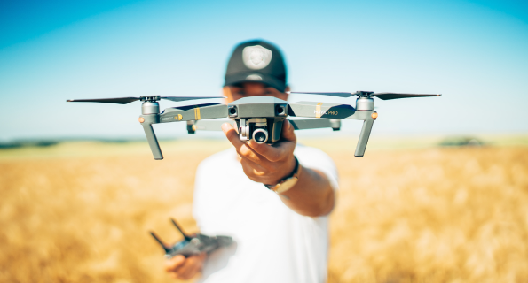

remote camera
and Drone Inspection
Remote Video Inspection (RVI) means access to hard-to-reach areas of concern in any scenario. This is accomplished using the right video or fiber optic probe for each specific application. With the help of highly sensitive cameras and technology, we establish the reason for the numerous problems in the pipe systems. With the help of highly sensitive cameras and drones, we can establish the condition of a refractory lining before a scaffolding is built. This also ensures the safe entry into areas of high risk areas.
Fiberscopes, borescopes, video probes, pipe cameras and robotic cameras allow you to locate and inspect key areas of concern without excessive disassembly of equipment or systems and without the need for dangerous confined space entries.
Preliminary Inspections can be done on Refractory linings prior to access such as FCCU Cyclones giving the client an early advantage of planning and executing accurate shutdown schedules. Other applications include Sulphur Pits, Boilers and Reactors.
Pressure Vessels are a particular safety concern for manned entry, but video systems can be inserted through a valve, spool piece, instrumentation nozzle, or other access point to provide many inspections remotely.
Remote Visual inspection is used to complement predictive and preventative maintenance programs. This technology is also used during shutdowns to streamline tasks by providing an inside view that saves time and money.
Video’s can be viewed in real time and stored onto a USB to allow for quick transfer to other PC’s. Our unique cameras have the ability to rotate 360o and can pan up and down giving clients thorough inspection of their equipment.
Other applications include; underground tanks, heat exchanger tubes, drainage systems and weld inspections.
